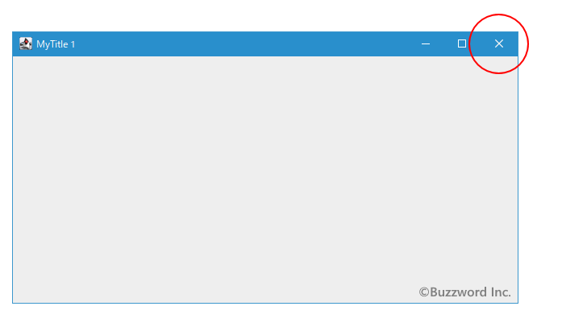
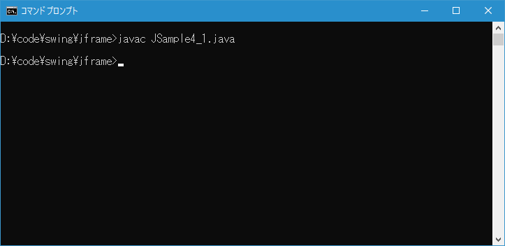
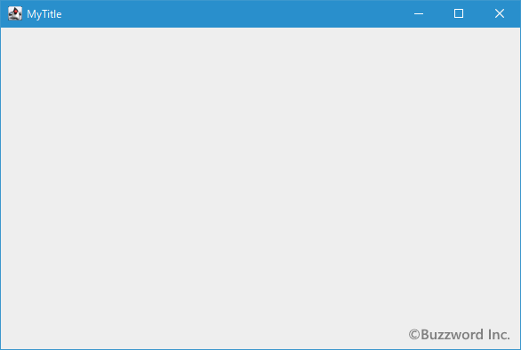
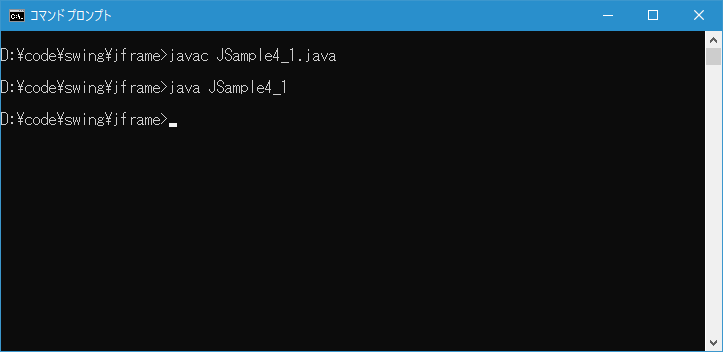

閉じるボタンがクリックされた時にアプリケーションを終了するように設定する
フレームの画面右上には最大化ボタンや最小化ボタンと並んで「×」と表示されている閉じるボタンがあります。デフォルトでは閉じるボタンをクリックしてもフレームが非表示になるだけでアプリケーションは終了しません。ここでは閉じるボタンがクリックされた時にアプリケーションが終了するように設定する方法について解説します。
閉じるボタンをクリックしたときの処理を設定する
フレームを表示させた時に、フレームの右上に3つのボタンが表示されます。一番右にある「×」と表示されているボタンが閉じるボタンです。

閉じるボタンがクリックされた時の処理を設定するには JFrame クラスで定義されている setDefaultCloseOperation メソッドを使います。
public void setDefaultCloseOperation(int operation)
ユーザーがこのフレームの「クローズ」を開始したときに、デフォルトで実行される処理を設定します。 次のうち1つを指定する必要があります。
* DO_NOTHING_ON_CLOSE (WindowConstantsに定義): 何も行わない。プログラムは登録されているWindowListenerオブジェクトのwindowClosingメソッドで処理を行う必要がある。
* HIDE_ON_CLOSE (WindowConstantsに定義): 登録されている任意のWindowListenerオブジェクトを呼び出したあとで、自動的にフレームを隠す。
* DISPOSE_ON_CLOSE (WindowConstantsに定義): 登録されている任意のWindowListenerオブジェクトを呼び出したあとで、自動的にフレームを隠して破棄する。
* EXIT_ON_CLOSE (WindowConstantsで定義されています): System exitメソッドを使用してアプリケーションを終了します。 アプリケーションでのみ使用する。
デフォルトではHIDE_ON_CLOSEが設定されます。 このプロパティの値を変更すると、プロパティ名defaultCloseOperationでプロパティ変更イベントがトリガーされます。
注: Java仮想マシン(VM)内で最後の表示可能なウィンドウが破棄されると、VMが終了することがあります。 詳細は、「AWTスレッドの問題」を参照してください。
パラメータ:
operation - ユーザーがフレームを閉じるときに実行されるべき処理
例外:
IllegalArgumentException - defaultCloseOperationの値が前述の有効な値と異なる場合
SecurityException - EXIT_ON_CLOSEが指定されていて、SecurityManagerが呼出し側にSystem.exitの呼出しを許可しない場合
引数に指定できる値は次の定数のいずれかです。
JFrame.DO_NOTHING_ON_CLOSE
JFrame.HIDE_ON_CLOSE
JFrame.DISPOSE_ON_CLOSE
JFrame.EXIT_ON_CLOSE
デフォルトの値は HIDE_ON_CLOSE となっており閉じるボタンをクリックしてもフレームが非表示となるだけでプログラムそのものは終了しません。閉じるボタンがクリックされた時にアプリケーションが終了するようにするには EXIT_ON_CLOSE を設定します。
実際の使い方は次のようになります。フレームを作成したあとで setDefaultCloseOperation メソッドを使って閉じるボタンがクリックされた時の処理を設定しています。
JFrame frame = new JFrame("MyTitle");
frame.setDefaultCloseOperation(JFrame.EXIT_ON_CLOSE);
サンプルプログラム
それでは簡単なサンプルプログラムを作って試してみます。テキストエディタで次のように記述したあと、 JSample4_1.java という名前で保存します。
import javax.swing.JFrame;
class JSample4_1{
public static void main(String args[]){
JFrame frame = new JFrame("MyTitle");
frame.setSize(600, 400);
frame.setDefaultCloseOperation(JFrame.EXIT_ON_CLOSE);
frame.setVisible(true);
}
}
次のようにコンパイルを行います。
javac JSample4_1.java

コンパイルが終わりましたら実行します。
java JSample4_1
次のようなフレームが表示されます。

フレームに表示されている閉じるボタンをクリックするとアプリケーションが終了します。アプリケーションを実行したコマンドプロンプトでもアプリケーションが終了して入力待ちになっていることが確認できます。

-- --
フレームの閉じるボタンがクリックされた時にアプリケーションが終了するように設定する方法について解説しました。
( Written by Tatsuo Ikura )

著者 / TATSUO IKURA
初心者～中級者の方を対象としたプログラミング方法や開発環境の構築の解説を行うサイトの運営を行っています。